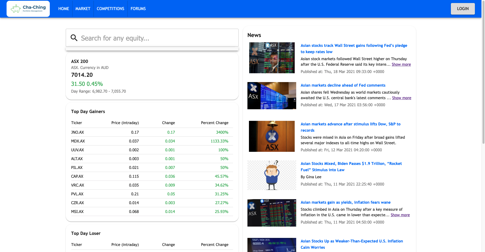
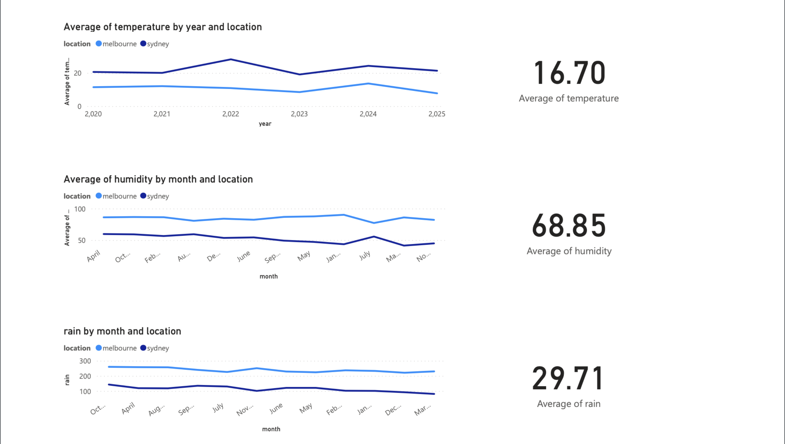
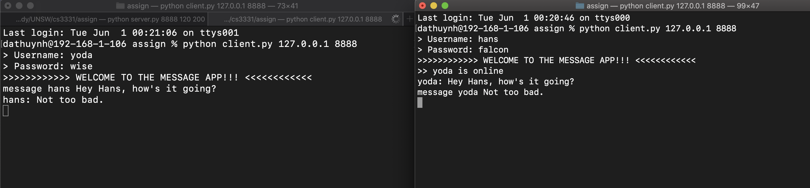
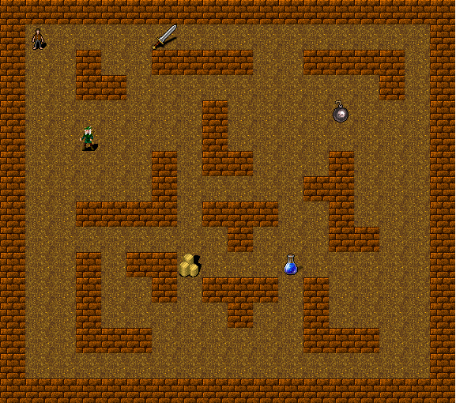
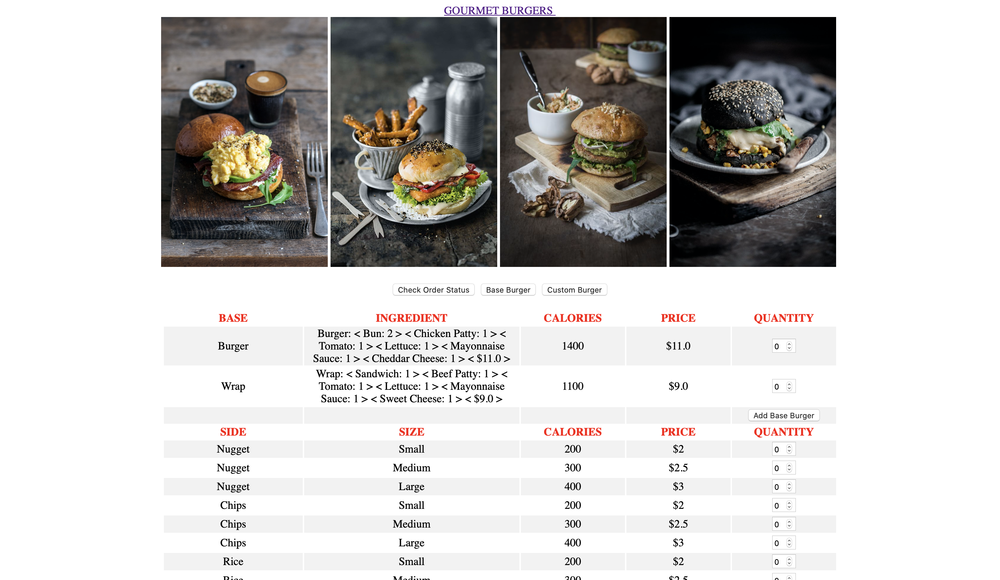

I worked in a team of 5 in a agile development process using Jira for project
management to successfully deliver the final product in 10 weeks. I also developed
Javascript/ReactJS (Frontend) and Python/Django (Backend) skills through building
the stock page, portfolio page and some of the most major components in the web app.
This Deep Learning model analyses chest X-rays to predict if a patient is diagnosed
with pneumonia. I developed a Convolutional Neural Network model using Keras and
TensorFlow in Python Notebook. After trainings, the model can achieved 85% accuracy rate
for a dataset of 6,000 samples.

An IoT solution based on Azure IoT Hub receives weather data from simulated devices
and exports to Power BI for analysis and visualisation. During this project, I wrote
Python code creating random weather data and send messages to Azure IoT Hub. Then
Azure IoT Hub was deployed, configured and computed to receive data and generate datasets.
I also develop Power BI skills for analysing data and generating reports.
January, 2020 - February, 2020
With Backtracking Algorithms, this Python program solves any sudoku or determines
if it is unsolvable. I used PyGame to develop the UI which illustrated the backtracking process
to solve a sudoku.
September, 2019 - November, 2019

A Python application provides instant and offline messaging services based on client-server
and peer-to-peer models. Throughout the project, I explored Socket Programming and
Application Layer Protocol. The server is mainly used to authenticate the clients and
direct the messages between clients through TCP. Clients can also send peer-to-peer messages
to each other to bypass the server.
June, 2019 - August, 2019

A Java application for the playing of dungeon-style puzzles was designed and implemented
through an Agile Development Process. During this project, I could deepen my understanding
of Object-Oriented Programming with Java and JavaFX while practicing Code Refactoring and
applications of Design Patterns.
February, 2019 - April, 2019

A Python project provides a management system for both restaurant customers and staff.
The development process includes Requirement Analysis, User Stories, UML Class Diagram,
Entity Relationship Design, Implementation and Testing.